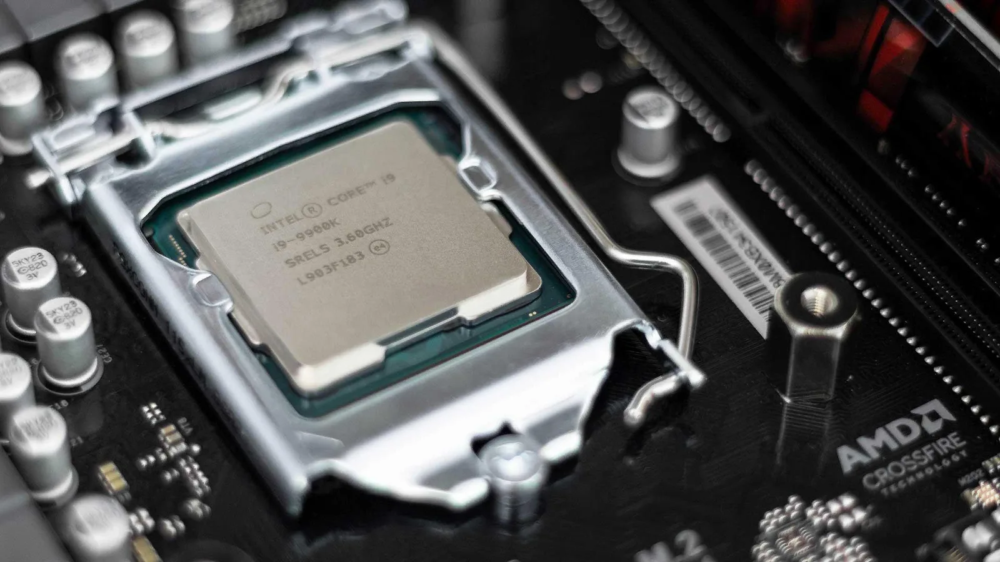

EXPERIMENTATION LOG
Overclocking isn't just cranking a slider. It's a hypothesis, a rig, hours of stress testing, and a result you can defend. Here's the log from pushing an Intel Core i9-9900K further than its stock profile without giving up stability under full AVX load.

THE HYPOTHESIS
Not every processor is fit for an aggressive overclock, and not every overclock that boots is actually stable. The real test is whether it survives the worst-case workload, not the easy one.
The goal: push the base boost clock of an Intel i9-9900K from 4.7GHz to 5.3GHz — with an unprecedented 0 AVX Offset, on a modest 360mm AIO cooler rather than exotic cooling. Getting there meant extensive research into how the chip behaves under everything from single-core to full multi-core AVX loads, before ever touching a voltage setting.
WHY AVX OFFSET IS THE HARD MODE
This is the part most overclocking claims gloss over — and the part that makes a 0 AVX offset result worth taking seriously.
WHAT AVX IS
Advanced Vector Extensions — instructions that accelerate heavy floating-point work like media transcoding, scientific computing, and synthetic stress tests such as Prime95.
WHY IT BREAKS OVERCLOCKS
AVX instructions draw significantly more power and generate more heat than ordinary workloads — enough that a clock speed rock-solid in games can crash outright the moment AVX code runs.
THE "OFFSET" WORKAROUND
Intel's AVX Offset setting lets the core ratio drop automatically when AVX is detected — e.g. 50x normally, dropping to 48x under AVX. It's a legitimate tool. It's also how most high-clock overclocks stay stable.
WHY ZERO OFFSET IS THE HARDER CLAIM
An offset of 0 means no safety net — the chip holds 5.3GHz under literally any workload, including the heaviest AVX torture tests. That's a materially stronger result than a "gaming overclock" that only looks stable because AVX never got in the way.
THE METHOD
A successful overclock is less "try a number" and more a loop, run over days until the result holds under the worst case, not just the first boot.
Characterized how the 9900K behaved from light single-core loads up to full 8-core / 16-thread loads before touching a single setting — establishing what "normal" looked like first.
Set a higher core voltage in the motherboard BIOS — comfortably under Intel's specified safe ceiling — before ever raising the clock multiplier.
Raised the multiplier in small increments. After each step, stress-tested with Prime95 — a billion complex instructions deep, including full AVX — to catch instability immediately rather than days later.
Multiple attempts, spread across days, converging on the highest clock that survived sustained Prime95 AVX punishment without a voltage bump the 360mm AIO couldn't keep cool.
THE RESULT
After multiple attempts and days of testing: a stable 5.3GHz all-core overclock, with 0 AVX Offset, cooled entirely by a 360mm AIO.
For context: 5GHz+ all-core overclocks on the 9900K are well documented across the enthusiast community, but usually rely on an AVX offset of -1 or -2 to stay stable, larger custom loops, or accept higher voltages than this configuration used. A genuine 0-offset result at this clock, on AIO cooling alone, is the less common outcome — and the reason this is worth logging rather than just screenshotting a BIOS save.